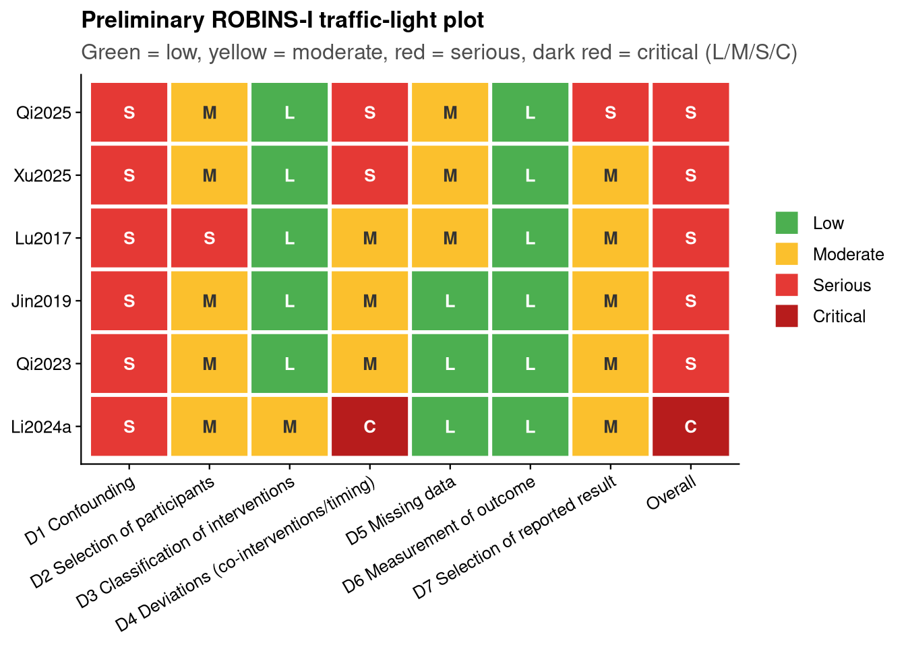

Show code
source("analysis/meta_helpers.R")Preliminary assessment. This is a provisional, machine-assisted mapping to the ROBINS-I domains, grounded in what was verified during data extraction. It is not a completed formal risk-of-bias assessment. Two reviewers must independently complete ROBINS-I and reconcile before these judgments are used.
All six included studies are non-randomised (observational cohorts or a case series), so risk of bias is framed with ROBINS-I. The dominant concern across the evidence base is bias due to confounding: treatment was assigned by clinicians, not randomised, so sicker (or, conversely, more salvageable) patients may have preferentially received the combination regimen.
rob <- tibble::tribble(
~study, ~D1, ~D2, ~D3, ~D4, ~D5, ~D6, ~D7, ~Overall,
"Qi2025", "Serious", "Moderate", "Low", "Serious", "Moderate", "Low", "Serious", "Serious",
"Xu2025", "Serious", "Moderate", "Low", "Serious", "Moderate", "Low", "Moderate", "Serious",
"Lu2017", "Serious", "Serious", "Low", "Moderate", "Moderate", "Low", "Moderate", "Serious",
"Jin2019", "Serious", "Moderate", "Low", "Moderate", "Low", "Low", "Moderate", "Serious",
"Qi2023", "Serious", "Moderate", "Low", "Moderate", "Low", "Low", "Moderate", "Serious",
"Li2024a", "Serious", "Moderate", "Moderate", "Critical", "Low", "Low", "Moderate", "Critical"
)
domain_labels <- c(
D1 = "D1 Confounding", D2 = "D2 Selection of participants",
D3 = "D3 Classification of interventions", D4 = "D4 Deviations (co-interventions/timing)",
D5 = "D5 Missing data", D6 = "D6 Measurement of outcome",
D7 = "D7 Selection of reported result", Overall = "Overall")
rob |> knitr::kable()| study | D1 | D2 | D3 | D4 | D5 | D6 | D7 | Overall |
|---|---|---|---|---|---|---|---|---|
| Qi2025 | Serious | Moderate | Low | Serious | Moderate | Low | Serious | Serious |
| Xu2025 | Serious | Moderate | Low | Serious | Moderate | Low | Moderate | Serious |
| Lu2017 | Serious | Serious | Low | Moderate | Moderate | Low | Moderate | Serious |
| Jin2019 | Serious | Moderate | Low | Moderate | Low | Low | Moderate | Serious |
| Qi2023 | Serious | Moderate | Low | Moderate | Low | Low | Moderate | Serious |
| Li2024a | Serious | Moderate | Moderate | Critical | Low | Low | Moderate | Critical |
levs <- c("Low", "Moderate", "Serious", "Critical")
rob_long <- rob |>
pivot_longer(-study, names_to = "domain", values_to = "judgment") |>
mutate(judgment = factor(judgment, levels = levs),
domain = factor(domain, levels = names(domain_labels), labels = domain_labels),
study = factor(study, levels = rev(c("Qi2025","Xu2025","Lu2017","Jin2019","Qi2023","Li2024a"))))
# Conventional risk-of-bias traffic-light colours (override the blue-grey palette here).
pal <- c(Low = "#4CAF50", Moderate = "#FBC02D", Serious = "#E53935", Critical = "#B71C1C")
txt <- c(Low = "white", Moderate = "#333333", Serious = "white", Critical = "white")
ggplot(rob_long, aes(domain, study, fill = judgment)) +
geom_tile(color = "white", linewidth = 1) +
geom_text(aes(label = substr(judgment, 1, 1), color = judgment),
size = 3.4, fontface = "bold") +
scale_fill_manual(values = pal, name = "Concern") +
scale_color_manual(values = txt, guide = "none") +
labs(x = NULL, y = NULL, title = "Preliminary ROBINS-I traffic-light plot",
subtitle = "Green = low, yellow = moderate, red = serious, dark red = critical (L/M/S/C)") +
theme_jama() +
theme(axis.text.x = element_text(angle = 30, hjust = 1))
Each domain states the ROBINS-I question, the judgement applied, and the study-specific reasoning drawn from data extraction. This is a single-pass, machine-assisted draft: two reviewers should independently confirm or revise every cell of the table above and then reconcile (see Ratification workflow).
Did baseline or time-varying confounding distort the treatment–outcome association?
Serious for all six studies. Treatment was allocated by clinicians, not randomised, so confounding by indication is the dominant threat. Few studies adjust, and where they do the results conflict: Jin2019 reports an all-patient adjusted HR ≈ 1.10 (near null), whereas Xu2025’s IPTW/Cox analysis gives HR ≈ 2.97 — opposite in direction to the unadjusted pool, consistent with its combination arm being sicker at baseline. Qi2025’s contrast is an unadjusted subgroup drawn from a risk-factor study. No study controls a pre-specified confounder set, so none reaches “moderate”.
Was selection into the study or the analysis related to intervention and outcome?
Serious for Lu2017 — a single-centre case series of 5 vs 6 patients, highly susceptible to selection. Moderate elsewhere: retrospective cohorts assembled from records, with Xu2025 explicitly flagging “selection bias in caspofungin use” and Qi2025 analysing a subgroup selected from a larger cohort.
Were intervention groups clearly defined and recorded at the time of treatment?
Low for most — echinocandin + TMP-SMX vs TMP-SMX are objectively documented from prescribing records. Moderate for Li2024a, whose “combination” arm bundles caspofungin with a corticosteroid and a lower TMP-SMX dose, blurring what the intervention actually is.
Were there systematic differences in co-interventions or in treatment timing?
Critical for Li2024a — the caspofungin arm’s corticosteroid and reduced-TMP co- interventions are confounded with the antifungal, so an echinocandin effect cannot be isolated. Serious for Qi2025 and Xu2025, where caspofungin timing is mixed initial/salvage and not cleanly recorded relative to treatment start. Moderate for the remaining studies (Lu2017, Jin2019, Qi2023).
Were outcome (and covariate) data reasonably complete?
Moderate for the retrospective cohorts Qi2025 and Xu2025 and the tiny Lu2017 series, given incomplete covariate/outcome capture and no formal handling of missingness; Low for Jin2019, Qi2023 and Li2024a, where mortality was ascertained for all included patients.
Could outcome ascertainment differ between groups?
Low for all. The outcome is all-cause mortality (in-hospital / ~30-day) — an objective endpoint unlikely to be assessed differentially by treatment arm.
Is the reported effect likely selected from multiple analyses or subgroups?
Serious for Qi2025, whose mortality comparison is a subgroup extracted from a risk-factor study with no pre-registered analysis plan (the same feature that produced Yang et al.’s ventilated-subgroup extraction error). Moderate elsewhere: retrospective designs without public protocols, so selective reporting cannot be excluded.
Following ROBINS-I (the overall rating tracks the least favourable domain), the body of evidence is at serious risk of bias — driven by confounding — with Li2024a at critical risk from its bundled co-interventions. This is the risk-of-bias input to the GRADE assessment (serious → −1). It is unlikely to improve under formal review, because every included study is non-randomised.
To move this from draft to final:
Until then, every judgement here is provisional.